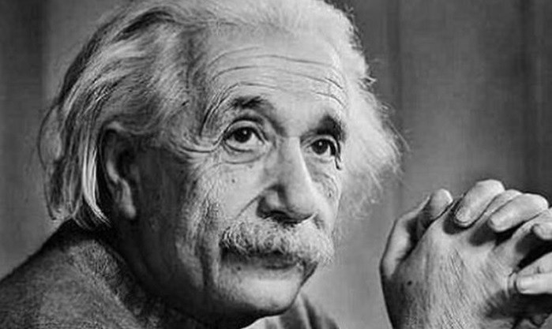

알베르트 아인슈타인(독일어: Albert Einstein, 영어: Albert Einstein 앨버트 아인스타인, 1879년 3월 14일 ~ 1955년 4월 18일)은 독일 태생으로 스위스와 미국에서 활동한 이론물리학자이다. 그의 일반 상대성이론은 현대 물리학의 형성에 지대한 영향을 끼쳤다. 1921년 광전효과에 관한 기여로 인하여 노벨 물리학상을 수상하였다.
1900년 봄, 아인슈타인은 연방 공과대학교를 졸업하였지만, 시민권 문제와 유대인에 대한 배척으로 취직을 하지 못하였다. 그는 가정교사, 임시교사 등을 전전하다가, 다행히 스위스 시민권을 취득한 후, 대학 친구였던 수학자 마르첼 그로스만의 아버지의 도움으로 베른에 있는 특허 사무소의 심사관으로 채용될 수 있었다. 특허 심사관으로 근무하던 1905년, 아인슈타인은 독일의 물리학 연보(Annalen der Physik)에 일련의 중요한 논문들을 다섯 편 연달아 발표한다. 우선 5월 한 달 동안 차례대로 브라운 운동에 관한 '정지 액체 속에 떠 있는 작은 입자들의 운동에 대하여', 막스 플랑크의 플랑크 상수를 도입해 빛의 광전 효과를 설명하여 고전 양자론을 태동시킨 '빛의 발생과 변화에 관련된 발견에 도움이 되는 견해에 대하여', 그리고 특수 상대성이론을 소개한 '운동하는 물체의 전기역학에 대하여'를 발표하였다. 1905년 8월에는 질량과 에너지의 등가설을 제창한 '물체의 관성은 에너지 함량에 의존하는가' 를 발표하였다. 상대성이론의 초기 아이디어들은 당시에 앙리 푸앵카레, 앨버트 에이브러헴 마이컬슨, 에드워드 몰리, 헨드릭 로런츠등 여러 학자들에 의해 알려져 있었지만, 이 두 논문은 당시 상대성에 대해 알려져있던 관련 사실들을 포함하면서 관성계의 상대성 이론을 명쾌하게 정립하였고 특수 상대성 이론의 대표적 논문들로 여겨진다. 1905년에 발표한 이 네 편의 논문들은 최초로 원자의 존재와 통계적 요동을 바탕으로 브라운 운동을 설명하는 한편, 현대물리학에서 두 축으로 불리는 양자역학과 상대성이론에 크게 기여하는 뛰어난 논문들이었다. 또한 도중에 같은 해 7월에는 '분자의 크기에 관한 새로운 규정' 을 발표한다. 아인슈타인은 이것으로 취리히 대학교에서 박사학위를 받게 된다. 이 논문은 고체를 이루는 분자의 운동과 에너지에 관련된 것이었다.
이후 특수 상대성이론이 알려짐에 따라 아인슈타인은 유럽에서 점점 이름이 알려지게 되었다. 일반 상대성 이론은 중력을 시공간의 기하학으로 설명하는데, 관성계에 대해서는 헤르만 민코프스키가 민코프스키 공간을 도입하여 특수 상대성 이론과 시공간을 기하학적으로 다루는 방법을 제안하였다. 아인슈타인은 관성계에만 해당하는 특수 상대성 이론을 중력을 포함한 이론으로 확장하는 노력을 계속하였다. 리만 기하학이 그 이론의 틀로써 적당하다고 생각한 수학자 마르첼 그로스만이 아인슈타인에게 리만 기하학을 알려주면서 아이슈타인은 일반 상대성 이론을 본격적으로 만들어 나가기 시작하였다. 특허 사무소를 떠나서 학계로 입성한 그는 스위스에서 그리고 프라하와 독일의 대학교에서 정교수로 있었으며, 1912년 겨울에 모교인 ETH 취리히의 교수로 돌아왔다. 1914년에는 독일의 프로이센 과학 아카데미에 자리를 얻어 베를린에 머무르게 된다. 1914년에 드디어 일반 상대성 이론의 측지선 공식에 대한 최초의 형식화인 '일반 상대성 이론의 형식적 기초' 를 발표하게 되었다. 그는 일련의 시행 착오 끝에 1915년에 발표한 4편의 논문 중 마지막인 '중력의 장방정식' 에서 마침내 일반 상대성 이론의 완결된 장방정식을 최초로 구현해 내었다.
1919년 런던 왕립 학회는 기니 만에 있는 프린시페 섬에서 있었던 관측에서 그해 5월 29일의 일식을 촬영하였는데, 일반 상대성이론에서의 예측이 검증되었다고 발표하게 된다. 이로써 아인슈타인은 뉴턴의 고전역학적 세계관을 마감한 인물로서 범세계적인 명성을 얻게 된다. 그리고 1921년에는 광전 효과에 대한 공로로 노벨 물리학상을 수상하였다.
그러나 아인슈타인은 광양자설을 통해 양자역학의 초기 기반을 닦는 주요한 기여를 했음에도 불구하고 스스로는 양자역학을 온전한 이론으로 인정하지 않았다. 보어와 하이젠베르크 등에 의해 제창된 코펜하겐 해석 역시 받아들이지 않았다. 그는 수 년에 걸친 보어와의 논쟁을 통해 EPR 역설 등의 사고 실험을 제기하며 양자역학의 비결정론을 폐기하려 노력하였으나 이것은 역설적으로 두 석학의 논쟁을 통해 다른 과학자들이 양자역학의 개념적 기반을 공고히 이해하도록 도움을 주는 결과를 낳았다. 말년에는 양자역학과 거리를 두고 홀로 통일장 이론을 연구하였다.
